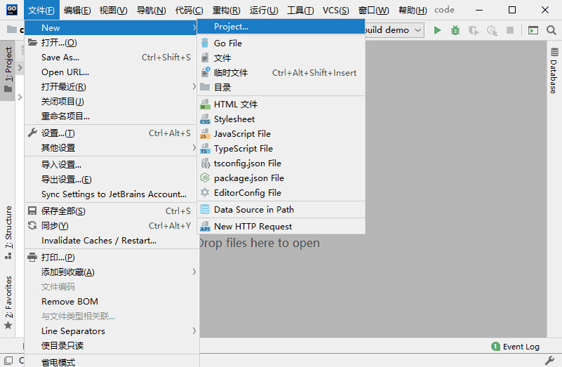
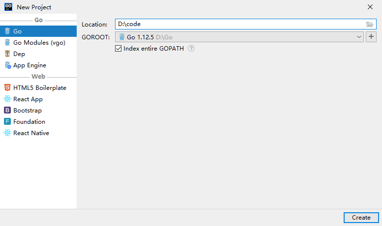
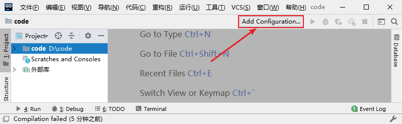
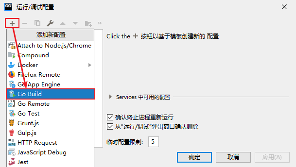
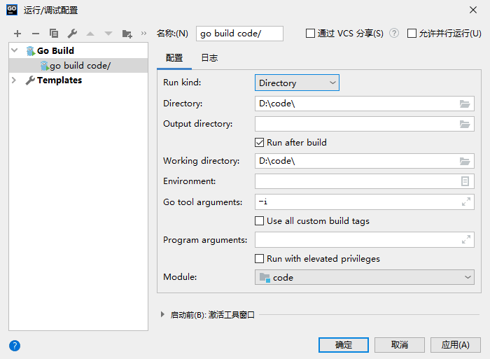
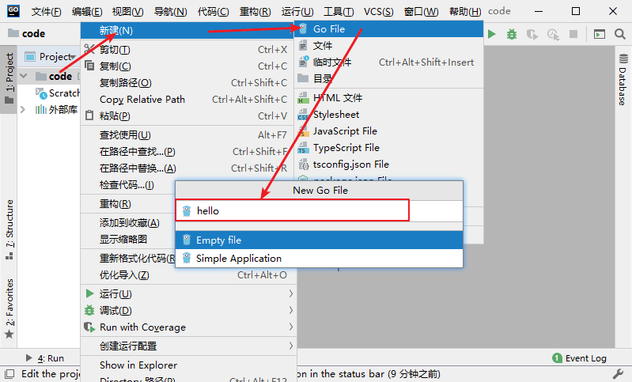
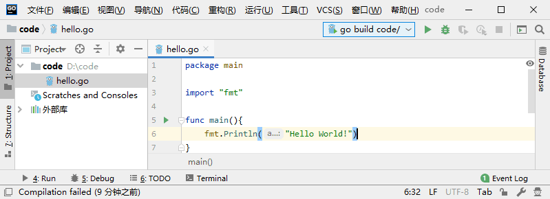
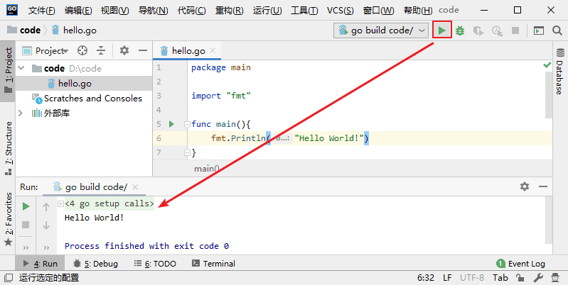

Goland入门指南（使用Goland创建并运行项目）
上一节详细介绍了 Goland 的安装和破解，本节我们来介绍一下怎么使用 Goland 来创建并运行一个项目。
为项目选择一个目录（尽量选择空目录），并点击“Create”完成创建。
在弹出的窗口中点击“+”，并在下拉菜单中选择“Go Build”。
点击“Go Build”之后，在窗口中填写对应的信息，如下所示。
上图中有以下几点需要注意：
在新创建的 Go 源文件中写入如下代码。
然后，我们就可以点击 Goland 右上方的绿色三角来运行上面编写的程序了。
创建项目
首先，在“文件”菜单中找到“New”，并在下一级菜单中选择“Project”来创建一个新项目。

在菜单中选择新建项目
在菜单中选择新建项目
为项目选择一个目录（尽量选择空目录），并点击“Create”完成创建。

创建项目
编辑运行/调试配置
每次创建项目之后，我们都需要对 Goland 进行一些配置，在 Goland 的右上方找到“Add Configuration”并单击。

点击 Add Configuration
点击 Add Configuration
在弹出的窗口中点击“+”，并在下拉菜单中选择“Go Build”。

编辑配置信息
编辑配置信息
点击“Go Build”之后，在窗口中填写对应的信息，如下所示。

上图中有以下几点需要注意：
- 名称：为本条配置信息的名称，可以自定义，也可以使用系统默认的值；
- Run kind：这里需要设置为“Directory”；
- Directory：用来设置 main 包所在的目录，不能为空；
- Output directory：用来设置编译后生成的可执行文件的存放目录，可以为空，为空时默认不生成可执行文件；
- Working directory：用来设置程序的运行目录，可以与“Directory”的设置相同，但是不能为空。
提示：除了上面提到的几点外，其余的配置项使用系统的默认值即可，无需修改。
编写并运行代码
将 Goland 配置好后，就可以在项目文件夹下编写代码了。首先新建一个 Go 源文件，在项目文件夹上点击右键，然后在弹出的菜单中找到“新建”，并在下一级菜单中选择“Go File”，最后在弹出框中输入文件名（红框处）并选择“Empty file”，无误后按“Enter”键进行确认。

新建 Go 源文件
新建 Go 源文件
在新创建的 Go 源文件中写入如下代码。

编写测试代码
编写测试代码
然后，我们就可以点击 Goland 右上方的绿色三角来运行上面编写的程序了。

运行程序
运行程序
关注公众号「站长严长生」，在手机上阅读所有教程，随时随地都能学习。内含一款搜索神器，免费下载全网书籍和视频。

微信扫码关注公众号